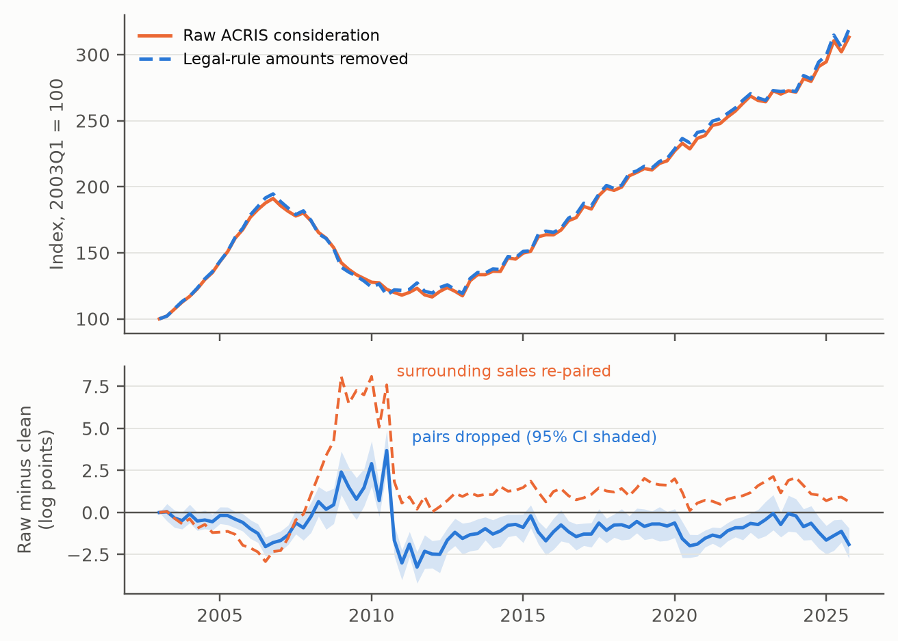

The question
When a lender takes title through foreclosure or a deed in lieu, New York transfer-tax rules can base the recorded consideration on a bid, judgment or discharged debt rather than a negotiated price. Should that amount enter a house-price index as if it were a sale price?
The paper classifies such deeds by their parties across every deed recorded in Manhattan, the Bronx, Brooklyn and Queens from 2003 to 2025, and measures what they do to a standard repeat-sales index.
Main findings
- 16,655deeds flagged as legal-rule transfers among 1.47 million records, 2003–2025.
- 62%of flagged transfers pass conventional sales screens.
- 3.7log points: the largest quarterly difference in the house-price index, in 2010Q3 (simultaneous 95% band: 1.6 to 5.8).
- 2.6log points in 2010Q3 when screening only the narrowest set of lender transfers (simultaneous 95% band across quarters: 0.9 to 4.4).


Why it matters
About 94–95% of flagged transfers recorded in 2016–2025 appear in the city’s public sales file at their recorded amount.
- Repeat-sales indices, hedonic models and local price series built from public deed records inherit these amounts unless deeds are classified by their parties: the document type does not distinguish them.
- The distortion is to timing: the raw index falls less into 2009–10 and more into 2011–12, which matters for short-window returns and borough comparisons. The hedonic comparison also changes around 2009–10. Its later path differs from the repeat-sales result, consistent with pairing contributing to the shortfall, without identifying that mechanism conclusively.
- Dropping flagged pairs and bridging across them answer different questions; the choice moves the crisis decline by about five log points and should be made explicitly.
- The classifier is released as a free, dependency-light Python module.
What the results can tell us
The largest quarterly effect concerns the path of the index. The peak-to-trough contrast is −0.64 log points, with an interval from −3.03 to +1.25; it does not establish a change in the overall decline. The effect depends on which transfers are screened and how repeat-sale pairs are rebuilt. The paper reports the classification rules, document readings and uncertainty; 84 of the 400 reviewed deeds remain unresolved. Agreement with resolved AI readings is not independently verified accuracy. The uncertainty bands condition on classifications, and deleting transfers changes the transaction population.
Cite this paper
BibTeX citation
@misc{loschi2026deed,
author = {Loschi, Pablo},
title = {When a Deed Is Not a Market Sale: Foreclosure Transfers,
Statutory Consideration, and Repeat-Sales House-Price
Measurement},
year = {2026},
howpublished = {Working paper and replication package, Zenodo},
doi = {10.5281/zenodo.22925383}
}